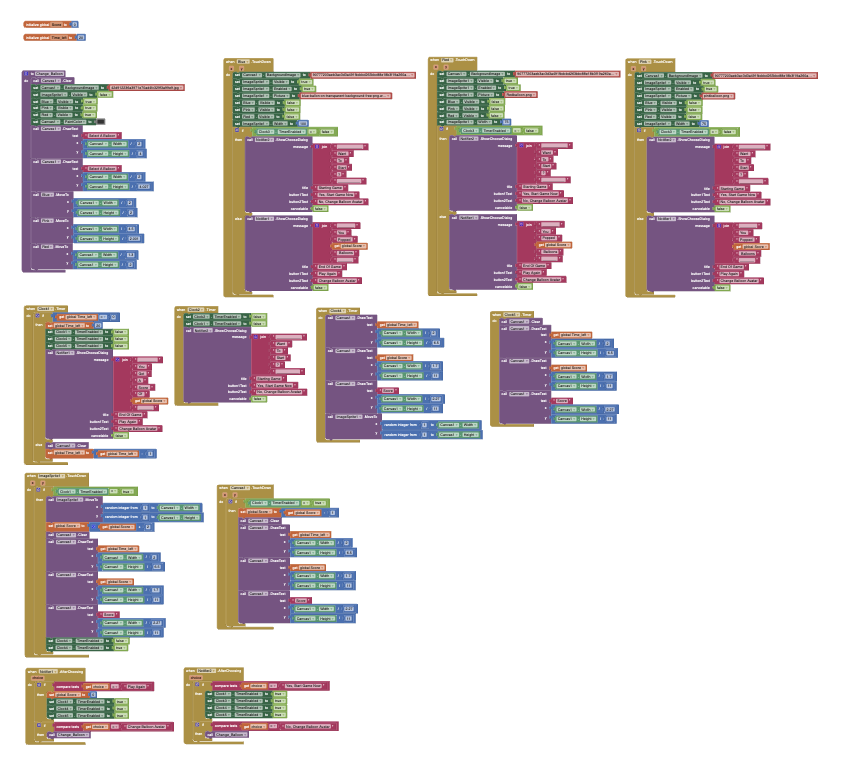

Game Interface & Demonstration

Gameplay demonstration (video or secondary screenshot) slot.
The game features a large playing canvas, a moving sprite (the balloon), and a score display at the top or bottom.
Project Overview: Random Movement & Scoring
The **Balloon Popper Game** is a demonstration of core game mechanics using **MIT App Inventor**. The main goal was to create an interactive challenge by making a sprite move **randomly** and rewarding the player for successfully interacting with it (i.e., popping the balloon).
The application uses the **Canvas** component as the game board and a **Sprite** component (which could be an image of a balloon) to represent the target. A **Timer** component is essential for triggering the movement at regular intervals, ensuring the balloon is always on the move and difficult to catch.
Technical Skills Demonstrated
This project showcases my ability to manage real-time game state and random events:
- **Randomization:** Using the built-in **Random Integer** block to calculate new X and Y coordinates for the balloon's next position.
- **Timer Control:** Implementing a **Clock** component to create a game loop, moving the sprite every fraction of a second, which is key for making the game challenging.
- **Event-Driven Interaction:** Using the **Sprite.Touched** event block to detect when the player taps the balloon.
- **State Updating:** Updating a score **variable** and immediately displaying the new score in a **Label** component upon a successful pop.
- **Coordinate Systems:** Understanding and using the Canvas's X and Y coordinate system to keep the balloon within the visible playing area.
**Movement and Scoring Logic Blocks:** This comprehensive set of blocks manages the entire game flow, from initial setup to the **Clock Timer** that moves the balloon and the **touch events** that update the score.
